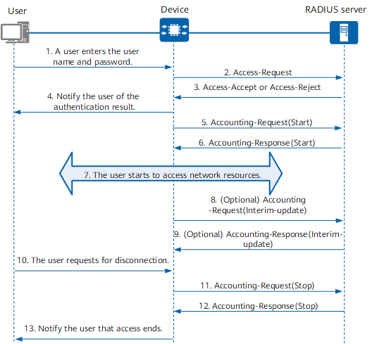

RADIUS Authentication, Authorization, and Accounting Process
A device that functions as a RADIUS client collects user information, including the user name and password, and sends the information to the RADIUS server. The RADIUS server then authenticates users according to the information, after which it performs authorization and accounting for the users. Figure 1 shows the information exchange process between a user, a RADIUS client, and a RADIUS server.
Figure 1 RADIUS authentication, authorization, and accounting process
- A user needs to access a network and sends a connection request containing the user name and password to the RADIUS client (device).
- The RADIUS client sends a RADIUS Access-Request packet containing the user name and password to the RADIUS server.
The RADIUS server verifies the user identity:
- If the user identity is valid, the RADIUS server returns an Access-Accept packet to the RADIUS client to permit further operations of the user. The Access-Accept packet contains authorization information because RADIUS provides both authentication and authorization functions.
- If the user identity is invalid, the RADIUS server returns an Access-Reject packet to the RADIUS client to reject access from the user.
- The RADIUS client notifies the user of whether authentication is successful.
- The RADIUS client permits or rejects the user access request according to the authentication result. If the access request is permitted, the RADIUS client sends an Accounting-Request(Start) packet to the RADIUS server.
- The RADIUS server sends an Accounting-Response(Start) packet to the RADIUS client and starts accounting.
- The user starts to access network resources.
- (Optional) If real-time accounting is enabled, the RADIUS client periodically sends an Accounting-Request(Interim-update) packet to the RADIUS server, preventing incorrect accounting result caused by unexpected user disconnection.
- (Optional) The RADIUS server returns an Accounting-Response(Interim-update) packet and performs real-time accounting.
- The user sends a logout request.
- The RADIUS client sends an Accounting-Request(Stop) packet to the RADIUS server.
- The RADIUS server sends an Accounting-Response(Stop) packet to the RADIUS client and stops accounting.
- The RADIUS client notifies the user of the processing result, and the user stops accessing network resources.